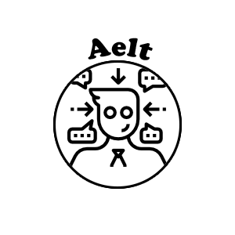

<!--
  Generated template for the DashboardPage page.

  See http://ionicframework.com/docs/components/#navigation for more info on
  Ionic pages and navigation.
-->
<ion-header>

  <ion-navbar align-itens-center color="aelt">
    <div>
      <div>
        <ion-title>AELT Corporation
          
        </ion-title>
      </div>
      <div>
        <button ion-button right (click)="logout()" >
            <ion-icon name="exit"></ion-icon>
        </button>
      </div>
    </div>
  </ion-navbar>
</ion-header>


<ion-content padding>

</ion-content>